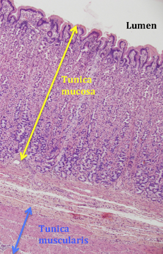
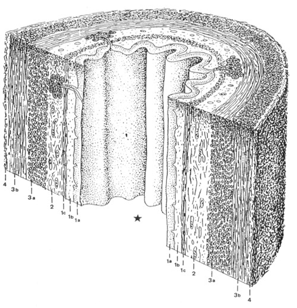

Opbouw van organen
Elk orgaan is microscopisch opgebouwd uit een aantal lagen of tunicae (enkelvoud is tunica; dit is Latijn voor vlies). Eén van de lagen die jullie wellicht reeds kennen is de slijmvlieslaag of tunica mucosa. Deze slijmvlieslaag vormt de eerste bedekking van onder andere de holten van organen (= lumina enkelvoud lumen) en is zelf opgebouwd uit verschillende weefsels. Op dezelfde manier is de tunica muscularis de spierlaag in de wand van organen, die er bijvoorbeeld door contractie voor kan zorgen dat de inhoud van het orgaan in de juiste richting voortbeweegt.

Deze microscopische foto toont een stukje van de maag waarin de tunica mucosa zorgt voor de aanmaak van maagsap, dat in het lumen van de maag terechtkomt. De dikke tunica muscularis zorgt ervoor dat het voedsel goed wordt gekneed.

Vertrekkend vanuit het lumen (van centraal naar perifeer) kan de wand van een buisvormig orgaan (zoals bijvoorbeeld de darm), dikwijls ingedeeld worden in 4 ‘mantels’ of tunicae, die we als laagjes kunnen zien in de preparaten en die verder kunnen onderverdeeld worden:
1. Tunica mucosa (slijmvlieslaag)
1a. lamina epithelialis (epitheellaag)
1b. lamina propria (bindweefsellaag)
1c. lamina muscularis mucosae (laagje glad spierweefsel)
2. Tela submucosa (bindweefsellaag)
3. Tunica muscularis (spierlaag)
3a. stratum circulare
3b. stratum longitudinale
4. Tunica adventitia (bindweefsellaag zonder aflijnend mesotheel) of Tunica serosa
(bindweefsellaag afgelijnd met mesotheel)
Variaties op deze algemene opbouw zijn mogelijk.
Sluit dit venster en ga terug naar het zelfstudiepakket